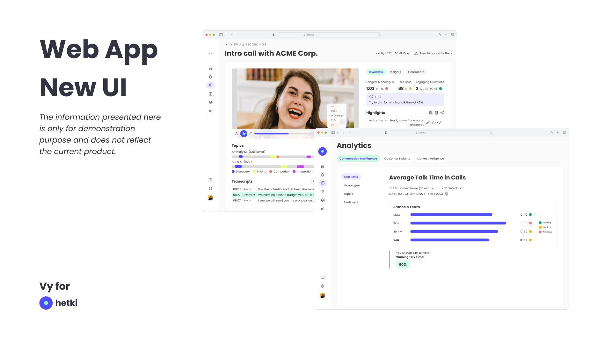
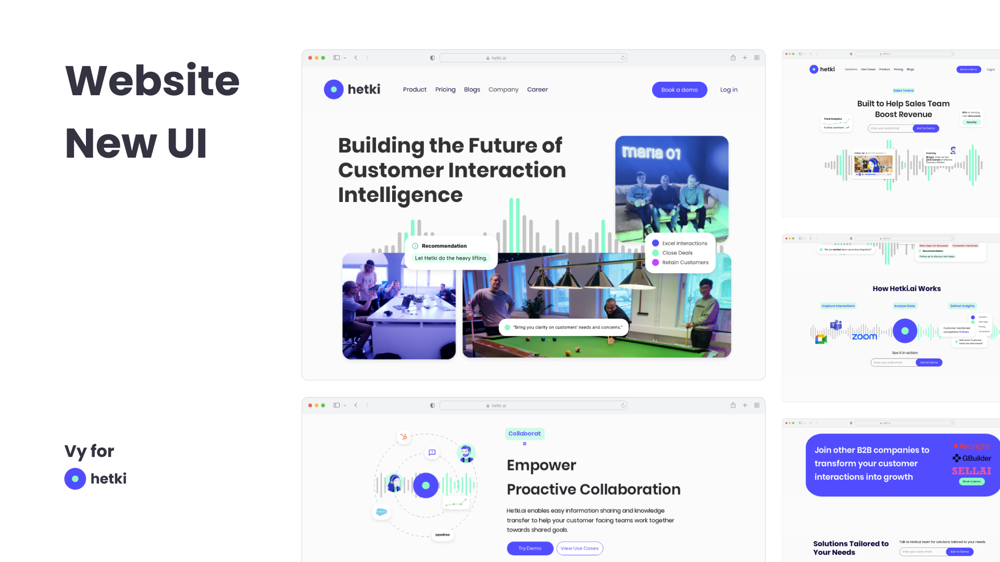
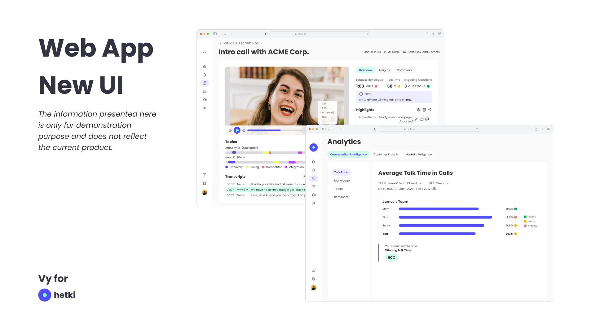
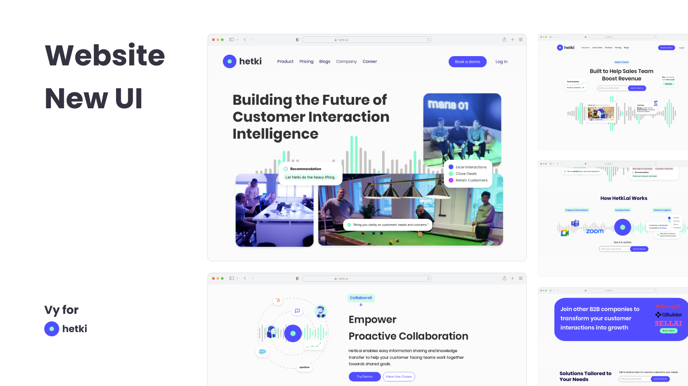

Vy for Hetki.ai: Design for a New Launch
Problem Description:
Hetki.ai, a new Finnish startup, wanted to have an overhaul of their digital presence and improve product design to prepare for the upcoming launch of their B2B product.
Information was omitted and modified due to NDA.
Summary of Tasks Performed:
- Market and Competitor Research
- Persona Development
- Interface Design (Website and Product)
- Graphics and Animated Assets Creation
- Website Building (using Wix)
Process:
I conducted desk research on existing competitors and where Hetki.ai's identity was standing at the time. A competitor market positioning overview done as part of the market research to identify opportunities for Hetki.ai on the market.
After evaluating the existing website and branding, I believed that a new branding identity was necessary for Hetki.ai to appeal to their target market segment. I designed the new identity before performing UI/UX-related tasks. Because Hetki.ai at the time was not a public product and was only used by a selected number of early adopters, it was an appropriate time to make large change in identity before the product's upcoming launch to the public.
Old branding and UI:
(Capture retrieved from waybackmachine.org)

During the development of the new identity:
- I conducted desk research to gain a deep understanding and to analyze the markets, competitors.
- To further understand the competiors and how Hetki.ai can position itself in the market, I used social listening strategy to learn of the strengths and weaknesses of the competitors and how they are perceived by their users.
- I worked closely with the CEO to understand his vision for the product and the early adopters' feedbacks and use cases to develop the user persona used for the branding, marketing and UI/UX redesign.
Outcome:
New Branding:
The new branding includes a new color scheme, typography, logo, motifs and other design components that can be used across various facets of Hetki.ai as a company and product.

Implementation of New Branding:
As it is a small startup with small design and development team, I was also involved in the implementation of design using the no-code platform Webflow.
 


